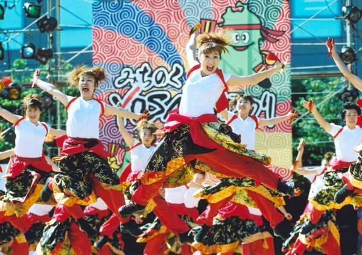

Japón y su cultura
Este es el Trabajo Práctico N°1 del grupo 16.

Templo Fushimi Inari en Kioto, uno de los más icónicos de Japón.
Cultura japonesa
La cultura japonesa es una fusión única de tradiciones milenarias y tecnología de vanguardia. Desde ceremonias del té, templos antiguos y festivales tradicionales, hasta trenes bala, moda urbana y anime, Japón ofrece una rica diversidad que fascina al mundo. El respeto, la armonía y la estética minimalista son valores que se reflejan en su arquitectura, arte, gastronomía y vida cotidiana. Explorar Japón es sumergirse en una experiencia que equilibra lo espiritual, lo moderno y lo ancestral.
Escencia de la cultura japonesa

Gastronomía
Maquillaje tradicional

Danza tradicional
¿Querés conocer más sobre el arte japonés?
Explorá los museos más icónicos de Japón!